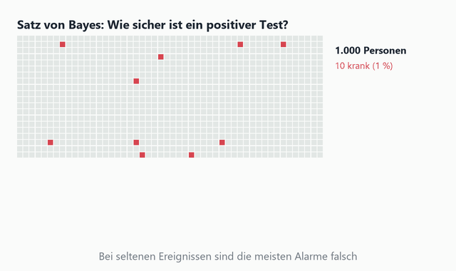
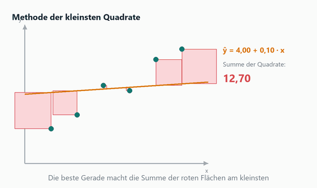
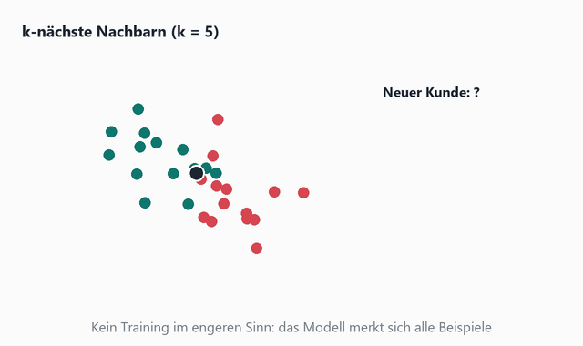
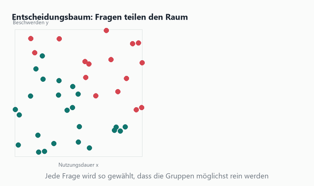

Mathematik und einfache Lernverfahren: wie Modelle wirklich rechnen
Hier wird nachgerechnet, was in Modul 1 beschrieben wurde. Keine Angst vor Formeln: Sie brauchen nur die vier Grundrechenarten, Quadrieren, Wurzelziehen und einen Taschenrechner. Jede Formel kommt mit einem Bild und einem durchgerechneten Beispiel. Danach kennen Sie die klassischen Lernverfahren – lineare und logistische Regression, k-nächste Nachbarn, Entscheidungsbaum, Random Forest, Naive Bayes und SVM – und wissen, wann welches passt.
16 Lektionen in 3 Teilen8 Animationen2 Rechner12 Übungen mit Antwortfeldern20 QuizfragenRechtsvorschrift § 4 Nr. 3
Im Alltag – vertrautes Bild als Einstieg
Fachlich – genaue Erklärung
Formel – mit Legende und Rechenbeispiel
Falle – hier verlieren viele Punkte
Lektion 1 · 30 Minuten
Vektoren und Matrizen: Daten als Zahlenreihen
Im Alltag
Ein Steckbrief: Alter 34, Größe 1,78 m, 3 Kinder. Schreibt man nur die Zahlen hintereinander – (34; 1,78; 3) –, hat man einen Vektor. Eine ganze Personalliste ist ein Stapel solcher Zeilen: eine Matrix.
Fachlich
Ein Vektor ist eine geordnete Liste von Zahlen. Jedes Datenbeispiel ist ein Vektor seiner Merkmale. Eine Matrix ist eine Tabelle aus Zahlen mit Zeilen und Spalten; der Datensatz mit n Beispielen und p Merkmalen ist eine n×p-Matrix X.
Warum das wichtig ist: Ein lineares Modell rechnet genau ein Skalarprodukt – Gewichte mal Merkmale, aufaddiert: ŷ = w₁x₁ + w₂x₂ + … + b. Ein neuronales Netz macht das Tausende Male gleichzeitig; Grafikprozessoren (GPUs) sind auf genau solche Matrixrechnungen spezialisiert.
Merksatz
Ein Beispiel ist ein Vektor, ein Datensatz eine Matrix – und die meisten Modelle rechnen mit gewichteten Summen (Skalarprodukten).
Lektion 2 · 25 Minuten
Abstand und Ähnlichkeit
Im Alltag
In Manhattan läuft man nicht durch Häuser, sondern um Blöcke herum. Die Luftlinie ist kürzer als der Fußweg. Beides sind Abstände – je nachdem, wie man sich bewegen darf.
Fachlich
Viele Verfahren (kNN, k-Means, Empfehlungssysteme, RAG-Suche) entscheiden über Abstände oder Ähnlichkeiten zwischen Vektoren. Kleiner Abstand bedeutet ähnliche Beispiele.
Manhattan-Abstand 7, euklidischer Abstand 5.
Formeln
Euklidisch: d = √((x₁ − y₁)² + (x₂ − y₂)² + …)
Manhattan: d = |x₁ − y₁| + |x₂ − y₂| + …
Kosinus-Ähnlichkeit: cos θ = a · b‖a‖ · ‖b‖
Kosinus misst die Richtung, nicht die Länge: 1 = gleiche Richtung, 0 = unabhängig. Standard bei Text-Embeddings.
Merksatz
Abstände sind nur fair, wenn die Merkmale skaliert sind – sonst entscheidet das Merkmal mit den größten Zahlen.
Kurz geprüft: Euklidischer Abstand zwischen (1 | 2) und (4 | 6)?
Lektion 3 · 25 Minuten
Funktionen und Steigung: was eine Ableitung bedeutet
Im Alltag
Auf einer Wanderung sagt das Schild „12 % Steigung“: Pro 100 m geradeaus geht es 12 m hoch. Die Steigung sagt, wie schnell sich die Höhe ändert, wenn man einen Schritt macht.
Fachlich
Eine Funktion ordnet jedem Eingabewert einen Ausgabewert zu, z. B. f(x) = x². Die Ableitung f′(x) gibt die Steigung an jeder Stelle an. Für ML ist wichtig: Die Ableitung der Fehlerfunktion zeigt, in welche Richtung man einen Parameter verstellen muss, damit der Fehler sinkt.
Funktion
Ableitung
Beispiel
f(x) = c (Konstante)
0
f(x) = 5 → Steigung überall 0
f(x) = a·x
a
f(x) = 3x → Steigung 3
f(x) = x²
2x
bei x = 3 ist die Steigung 6
f(x) = (x − 3)²
2(x − 3)
Minimum bei x = 3, dort Steigung 0
Hat eine Funktion mehrere Eingaben (Parameter), gibt es für jede eine partielle Ableitung. Zusammen bilden sie den Gradienten – einen Vektor, der in Richtung des steilsten Anstiegs zeigt. Kettenregel: Bei verschachtelten Funktionen multipliziert man die Ableitungen – das ist der Kern von Backpropagation (Modul 5).
Merksatz
Ableitung = Steigung. Am tiefsten Punkt einer Fehlerkurve ist die Steigung null.
Lektion 4 · 30 Minuten
Gradientenabstieg: im Nebel den tiefsten Punkt finden
Im Alltag
Sie stehen im dichten Nebel auf einem Berg und wollen ins Tal. Sie sehen nur den Boden unter den Füßen. Also tasten Sie, wo es am steilsten bergab geht, machen einen Schritt in diese Richtung – und wiederholen das.
Fachlich
Der Gradientenabstieg verändert die Parameter schrittweise entgegen dem Gradienten der Fehlerfunktion. Die Lernrate η bestimmt die Schrittweite.
Formel
wneu = walt − η · f′(walt)
Beispiel f(w) = (w − 3)² + 1, also f′(w) = 2(w − 3). Start w = −1, η = 0,1: Steigung −8, wneu = −1 − 0,1 · (−8) = −0,2. Der nächste Schritt führt näher an w = 3.
Zu große Lernraten springen über das Minimum hinweg – oder entfernen sich sogar davon.
Variante
Daten pro Schritt
Eigenschaft
Batch-Gradientenabstieg
alle Trainingsdaten
genau, aber langsam bei großen Daten
Stochastischer Gradientenabstieg (SGD)
ein Beispiel
schnell, unruhig
Mini-Batch
z. B. 32 bis 256 Beispiele
Standard in der Praxis
Merksatz
Lernrate zu klein: sehr langsam. Lernrate zu groß: springt über das Ziel oder läuft davon.
Falle
Gradientenabstieg kann in einem lokalen Minimum stecken bleiben – einem kleinen Tal, das nicht das tiefste ist. Bei der linearen Regression gibt es nur ein Minimum, bei neuronalen Netzen viele.
Lektion 5 · 40 Minuten
Wahrscheinlichkeit, bedingte Wahrscheinlichkeit, Satz von Bayes
Im Alltag
Der Rauchmelder piept. Brennt es? Meistens nicht – er piept auch, wenn jemand Toast anbrennen lässt. Weil echte Brände selten sind, sind die meisten Alarme Fehlalarme, obwohl der Melder gut ist.
Fachlich
Die bedingte Wahrscheinlichkeit P(A | B) ist die Wahrscheinlichkeit von A, wenn B bekannt ist. Der Satz von Bayes rechnet von P(B | A) auf P(A | B) um und berücksichtigt dabei, wie häufig A überhaupt ist (A-priori-Wahrscheinlichkeit, Basisrate).
Formeln
P(A | B) = P(B | A) · P(A)P(B) mit P(B) = P(B | A)·P(A) + P(B | nicht A)·P(nicht A)
P(A) = Basisrate (z. B. 1 % krank), P(B | A) = Trefferquote des Tests, P(B | nicht A) = Fehlalarmquote.

1 % krank, Test erkennt 90 %, Fehlalarme bei 5 %: Nur etwa jeder siebte positive Test stimmt.
Für Unternehmen: Ein Betrugsmodell mit „95 % Genauigkeit“ produziert bei seltenen Betrugsfällen trotzdem fast nur Fehlalarme. Die Basisrate gehört in jede Wirtschaftlichkeitsrechnung.
Rechner: Satz von Bayes
Merksatz
Ist ein Ereignis selten, sind auch bei einem guten Test viele Alarme falsch – die Basisrate entscheidet mit.
Falle
P(positiv | krank) und P(krank | positiv) sind verschiedene Dinge. Sie zu verwechseln ist so häufig, dass es einen Namen hat: Basisratenfehler.
Lektion 6 · 25 Minuten
Normalverteilung und Standardabweichung in der Praxis
Im Alltag
Körpergrößen von Erwachsenen: Die meisten liegen nahe am Durchschnitt, sehr kleine und sehr große Menschen sind selten. Zeichnet man die Häufigkeiten, entsteht eine Glocke.
Fachlich
Die Normalverteilung (Gauß’sche Glockenkurve) ist symmetrisch um ihren Mittelwert μ; ihre Breite bestimmt die Standardabweichung σ. Viele Messgrößen und Messfehler sind annähernd normalverteilt.
Bereich
Anteil der Werte (Faustregel 68-95-99,7)
μ ± 1σ
ca. 68 %
μ ± 2σ
ca. 95 %
μ ± 3σ
ca. 99,7 %
Beispiel: Füllmengen einer Abfüllanlage μ = 500 ml, σ = 4 ml. Zwischen 492 und 508 ml (± 2σ) liegen etwa 95 % der Flaschen; unter 488 ml (−3σ) liegen nur etwa 0,15 %. Eine Flasche mit 485 ml ist also sehr ungewöhnlich – ein Fall für die Anomalieerkennung.
Nicht alles ist normalverteilt: Einkommen, Wartezeiten und Bestellwerte sind meist rechtsschief. Dann sind Median und Quartile die ehrlicheren Kennzahlen.
Merksatz
Bei Normalverteilung liegen etwa 68 % der Werte innerhalb einer, 95 % innerhalb zweier und 99,7 % innerhalb dreier Standardabweichungen.
Lektion 7 · 30 Minuten
Lineare Regression: eine Gerade durch die Punktwolke
Im Alltag
Ein Taxi kostet 4 € Grundpreis plus 2 € pro Kilometer. Für 10 km zahlen Sie 24 €. Kennt man Grundpreis und Kilometerpreis, kann man jede Fahrt vorhersagen. Die lineare Regression lernt genau diese beiden Zahlen aus vergangenen Fahrten.
Fachlich
Die einfache lineare Regression modelliert eine metrische Zielgröße y als Gerade in Abhängigkeit von einem Merkmal x. b₀ ist der Achsenabschnitt (Wert bei x = 0), b₁ die Steigung (Änderung von y je Einheit x).
Modell
ŷ = b₀ + b₁ · x Residuum e = y − ŷ
ŷ („y-Dach“) ist die Vorhersage, y der echte Wert. Das Residuum ist der Fehler je Beispiel.
Beispiel: Ein Modell schätzt die Heizkosten einer Halle: ŷ = 1.200 € + 85 € · (Grad unter 15 °C). Bei durchschnittlich 9 °C (6 Grad unter 15) ergibt sich 1.200 + 85 · 6 = 1.710 €.
Annahmen (für gute Ergebnisse und saubere Deutung): linearer Zusammenhang, Residuen ohne Muster und mit gleicher Streuung, keine starken Ausreißer. Außerhalb des Datenbereichs (Extrapolation) ist jede Vorhersage unsicher.
Merksatz
b₀ = Startwert, b₁ = Veränderung pro Einheit. Die Gerade gilt nur im Bereich der Trainingsdaten sicher.
Falle
Eine Gerade für Grundstückspreise in Abhängigkeit von der Fläche, gelernt mit 300 bis 900 m², sagt für 10 m² womöglich einen negativen Preis vorher. Nicht weit über die Daten hinaus vorhersagen.
Lektion 8 · 45 Minuten
Methode der kleinsten Quadrate und Bestimmtheitsmaß R²
Im Alltag
Beim Darts ist ein Pfeil knapp daneben ärgerlich, einer ganz am Rand richtig schlecht. Wer große Fehler stärker bestraft als kleine, quadriert die Abstände – so funktioniert die beste Gerade.
Fachlich
Die Methode der kleinsten Quadrate (OLS) wählt b₀ und b₁ so, dass die Summe der quadrierten Residuen Σ(y − ŷ)² minimal wird. Für eine Gerade gibt es dafür eine geschlossene Formel.

Die beste Gerade macht die Summe der roten Quadrate am kleinsten.
Ein hohes R² beweist keine Ursache und keine gute Vorhersage für neue Daten. R² auf den Testdaten prüfen – mit vielen Merkmalen steigt das Trainings-R² fast immer.
Lektion 9 · 30 Minuten
Mehrere Merkmale: multiple Regression und Koeffizienten deuten
Im Alltag
Der Preis eines Gebrauchtwagens hängt nicht nur vom Alter ab, sondern auch vom Kilometerstand, der Ausstattung und davon, ob er einen Unfall hatte. Jedes Merkmal schiebt den Preis ein Stück rauf oder runter.
Fachlich
Die multiple lineare Regression nutzt mehrere Merkmale: ŷ = b₀ + b₁x₁ + b₂x₂ + … + bₚxₚ. Jeder Koeffizient bⱼ gibt an, wie sich ŷ ändert, wenn xⱼ um eine Einheit steigt und alle anderen Merkmale gleich bleiben („ceteris paribus“).
Beispiel Gebrauchtwagen:Preis = 24.000 − 1.300 · Alter − 0,04 · km + 1.500 · Navi − 3.000 · Unfall
Für ein 5 Jahre altes Auto mit 60.000 km, Navi, ohne Unfall: 24.000 − 6.500 − 2.400 + 1.500 − 0 = 16.600 €.
Kategoriale Merkmale werden als 0/1-Spalten aufgenommen (Dummy-Variablen, One-Hot).
Größe der Koeffizienten nur bei standardisierten Merkmalen vergleichen – sonst hängt sie an der Einheit (Euro gegen Cent).
Multikollinearität: Hängen Merkmale stark zusammen (Alter und Kilometerstand), werden die einzelnen Koeffizienten unsicher.
Regularisierung (Ridge, Lasso; Modul 4) zügelt große Koeffizienten und hilft gegen Overfitting.
Nichtlineare Zusammenhänge kann man mit umgeformten Merkmalen abbilden (x², log x) – das Modell bleibt in den Koeffizienten linear.
Merksatz
Ein Koeffizient zeigt die Wirkung eines Merkmals, wenn alle anderen gleich bleiben – nicht mehr und nicht weniger.
Prüfungstipp
Lineare Modelle sind gut erklärbar: Man kann jeder Fachabteilung zeigen, welches Merkmal wie stark wirkt. Das ist ein Argument in Aufgaben mit Erklärungs- oder Begründungspflicht.
Lektion 10 · 35 Minuten
Logistische Regression: Wahrscheinlichkeit für eine Klasse
Im Alltag
Ein Dimmer statt eines Lichtschalters: Die Helligkeit geht nicht sprunghaft von aus auf an, sondern gleitet zwischen 0 und 100 %. Die logistische Regression liefert keine harte Ja/Nein-Antwort, sondern einen Wert zwischen 0 und 1.
Fachlich
Die logistische Regression ist ein Klassifikationsverfahren. Sie berechnet erst eine gewichtete Summe z wie die lineare Regression und presst sie dann mit der Sigmoid-Funktion in den Bereich 0 bis 1 – als Wahrscheinlichkeit der Klasse 1.
Die Sigmoid-Kurve macht aus jeder Zahl eine Wahrscheinlichkeit.
σ(0) = 0,5. Große positive z → nahe 1, große negative z → nahe 0.
Beispiel Kündigung:z = −2 + 0,8 · Beschwerden. Ein Kunde mit 4 Beschwerden: z = −2 + 3,2 = 1,2, P = 1 / (1 + e^(−1,2)) = 1 / (1 + 0,301) ≈ 0,77. Mit Schwelle 0,5: Vorhersage „kündigt“.
Die Schwelle ist eine Geschäftsentscheidung: Kostet ein übersehener Kündiger viel und ein Anruf wenig, senkt man sie (z. B. auf 0,3) – mehr Kunden werden angerufen. Trainiert wird mit der Verlustfunktion Kreuzentropie (Log-Loss), meist per Gradientenabstieg.
Merksatz
Logistische Regression = lineare Summe + Sigmoid = Wahrscheinlichkeit einer Klasse. Die Schwelle legt das Geschäft fest, nicht die Mathematik.
Falle
Trotz des Namens kein Regressionsverfahren für Zahlen. Wer in der Prüfung „logistische Regression für die Umsatzprognose“ vorschlägt, verliert die Punkte.
Lektion 11 · 30 Minuten
k-nächste Nachbarn: Sag mir, wer deine Nachbarn sind
Im Alltag
Sie ziehen in eine neue Stadt und suchen einen Friseur. Sie fragen die fünf Nachbarn, die am nächsten wohnen. Drei empfehlen denselben Laden – Sie gehen hin.
Fachlich
k-nächste Nachbarn (kNN) klassifiziert ein neues Beispiel nach der Mehrheit der k ähnlichsten Trainingsbeispiele (bei Regression: Mittelwert der Nachbarn). Es gibt kein Training im engeren Sinn – das Modell speichert alle Beispiele („lazy learning“).

k = 5: Die Mehrheit der fünf nächsten Nachbarn entscheidet.
Beispiel
Neuer Kunde mit (Vertragsmonate 10, Beschwerden 3), Merkmale skaliert. Die drei nächsten Kunden: Abstand 0,8 „kündigt“, 1,1 „kündigt“, 1,5 „treu“. Bei k = 3 lautet die Vorhersage „kündigt“ (2 : 1).
Wahl von k
Wirkung
k klein (z. B. 1)
folgt jedem Ausreißer → Overfitting
k groß
zu glatt, Mehrheitsklasse dominiert → Underfitting
Praxis
k per Kreuzvalidierung wählen; bei zwei Klassen ungerade
Stärken: einfach, ohne Trainingszeit, gut erklärbar („diese fünf ähnlichen Fälle“). Schwächen: langsam bei großen Daten (jede Vorhersage vergleicht mit allen), braucht skalierte Merkmale, schwach bei sehr vielen Merkmalen (Fluch der Dimensionalität).
Merksatz
kNN: ähnlichste Fälle suchen, Mehrheit entscheidet. Vorher skalieren, k mit Kreuzvalidierung wählen.
Lektion 12 · 45 Minuten
Entscheidungsbaum: Fragen stellen, Gini und Entropie
Im Alltag
Beim Spiel „Wer bin ich?“ fragen geschickte Spieler zuerst „Bin ich eine Frau?“ – eine Frage, die die Möglichkeiten halbiert. Ein Entscheidungsbaum sucht auch immer die Frage, die am meisten Klarheit bringt.
Fachlich
Ein Entscheidungsbaum teilt die Daten schrittweise mit Ja/Nein-Fragen zu einzelnen Merkmalen. In jedem Knoten wählt er die Frage, die die Gruppen am reinsten macht. Die Blätter liefern die Vorhersage (Mehrheitsklasse oder Mittelwert).

Jede Frage zieht eine Linie parallel zu einer Achse.
Reinheitsmaße
Gini-Unreinheit G = 1 − Σ pᵢ² Entropie H = − Σ pᵢ · log₂ pᵢ
pᵢ = Anteil der Klasse i im Knoten. G = 0 heißt rein; bei zwei Klassen ist G höchstens 0,5.
Durchgerechnet
Knoten mit 100 Kunden, 40 kündigen: G = 1 − (0,4² + 0,6²) = 1 − 0,52 = 0,48
Frage „Vertrag kürzer als 12 Monate?“ teilt in links 50 (35 kündigen) und rechts 50 (5 kündigen):
Der Baum probiert viele mögliche Fragen und nimmt die mit der größten Verbesserung. Gegen Overfitting begrenzt man die Tiefe oder die Mindestzahl Beispiele je Blatt (Hyperparameter) oder schneidet den Baum zurück (Pruning).
Merksatz
Ein Baum stellt die Frage, nach der die Gruppen am reinsten sind. Zu tiefe Bäume lernen auswendig.
Prüfungstipp
Bäume sind leicht zu erklären (Regeln), brauchen keine Skalierung und kommen mit gemischten Merkmalen zurecht – das sind die drei Standardvorteile. Nachteil: instabil, kleine Datenänderungen ändern den Baum stark.
Lektion 13 · 30 Minuten
Ensembles: Random Forest und Boosting
Im Alltag
Bei „Wer wird Millionär?“ liegt der Publikumsjoker meist richtig – nicht weil jeder im Saal klug ist, sondern weil sich die Fehler vieler Menschen gegenseitig aufheben.
Fachlich
Ein Ensemble kombiniert viele einfache Modelle zu einem starken. Die beiden wichtigsten Ideen sind Bagging (parallel, Abstimmung) und Boosting (nacheinander, Fehler korrigieren).
Random Forest: Mehrheit vieler unterschiedlicher Bäume.
Random Forest (Bagging)
Gradient Boosting
Aufbau
viele tiefe Bäume parallel, je auf einer Zufallsstichprobe (mit Zurücklegen) und mit zufälliger Merkmalsauswahl
viele flache Bäume nacheinander, jeder lernt die Restfehler der vorherigen
Wirkt gegen
Varianz (Overfitting einzelner Bäume)
Bias (zu einfache Modelle)
Stärken
robust, wenig Feinabstimmung nötig
bei Tabellendaten oft die höchste Genauigkeit
Bekannte Umsetzungen
scikit-learn RandomForest
XGBoost, LightGBM, CatBoost
Ensembles liefern eine Merkmalswichtigkeit (Feature Importance), sind aber weniger direkt erklärbar als ein einzelner Baum. Für Einzelentscheidungen nutzt man Erklärverfahren wie SHAP (Modul 6).
Merksatz
Bagging: viele Bäume parallel, Mehrheit entscheidet. Boosting: Bäume nacheinander, jeder korrigiert den Vorgänger.
Lektion 14 · 25 Minuten
Naive Bayes für Texte
Im Alltag
Eine Mail mit „Gewinn“, „sofort“ und „Konto bestätigen“ – Sie ahnen Spam, ohne den ganzen Text zu lesen. Jedes Wort ist ein kleines Indiz; zusammen ergeben sie ein klares Bild.
Fachlich
Naive Bayes wendet den Satz von Bayes auf viele Merkmale an. „Naiv“ heißt: Es nimmt an, dass die Merkmale (z. B. Wörter) bei gegebener Klasse unabhängig sind. Die Annahme stimmt selten – das Verfahren funktioniert trotzdem erstaunlich gut, besonders für Textklassifikation.
Beispiel mit einem Wort
30 % aller Mails sind Spam. Das Wort „Gewinn“ steht in 20 % der Spam-Mails und in 1 % der normalen Mails.
Mit mehreren Wörtern multipliziert das Verfahren die Einzelwahrscheinlichkeiten je Klasse und wählt die Klasse mit dem höchsten Ergebnis.
Stärken: sehr schnell, wenig Daten nötig, gut als Baseline für Texte. Schwächen: Wahrscheinlichkeiten oft schlecht kalibriert; unbekannte Wörter brauchen Glättung (Laplace).
Merksatz
Naive Bayes = Satz von Bayes mit der vereinfachenden Annahme unabhängiger Merkmale – schnell und stark bei Texten.
Lektion 15 · 25 Minuten
Support Vector Machine in einem Bild
Im Alltag
Zwischen zwei verfeindeten Lagern soll eine Straße gebaut werden – möglichst breit, damit niemand dem anderen zu nahe kommt. Die Mittellinie dieser Straße ist die Trennlinie der SVM.
Fachlich
Eine Support Vector Machine sucht die Trennlinie (allgemein: Hyperebene) mit dem größten Abstand (Margin) zu den nächstgelegenen Punkten beider Klassen. Diese Randpunkte heißen Stützvektoren. Mit dem Kernel-Trick trennt sie auch Daten, die nicht durch eine Gerade trennbar sind.
Hyperparameter C: wie streng Fehlklassifikationen bestraft werden – groß = enge Straße, wenig Fehler im Training (Overfitting-Gefahr).
Kernel: linear, polynomial oder RBF (radiale Basisfunktion).
Stärken: gut bei mittelgroßen Datensätzen mit vielen Merkmalen (z. B. Text). Schwächen: langsam bei sehr großen Datenmengen, braucht Skalierung, schwer erklärbar.
Merksatz
SVM: die Trennlinie mit dem breitesten Sicherheitsabstand; der Kernel-Trick macht krumme Grenzen möglich.
Lektion 16 · 30 Minuten
Welches Verfahren wann? Eine Entscheidungshilfe
Verfahren
Aufgabe
Erklärbarkeit
Skalierung nötig
Gut wenn …
Lineare Regression
Regression
sehr gut
für Vergleich der Koeffizienten
Zusammenhang annähernd linear, Begründung wichtig
Logistische Regression
Klassifikation
sehr gut
empfohlen
Wahrscheinlichkeiten und Begründung gefragt, Baseline
kNN
beides
gut (Beispiele)
ja
kleine Datensätze, Ähnlichkeit zählt
Entscheidungsbaum
beides
sehr gut (Regeln)
nein
Regeln für Fachabteilungen, gemischte Merkmale
Random Forest
beides
mittel
nein
robuste Genauigkeit ohne viel Feinabstimmung
Gradient Boosting
beides
mittel (mit SHAP)
nein
höchste Genauigkeit auf Tabellendaten
Naive Bayes
Klassifikation
gut
nein
Texte, wenig Daten, sehr schnell
SVM
beides
gering
ja
mittelgroße Daten mit vielen Merkmalen
Neuronale Netze
beides
gering
ja
Bild, Sprache, Text, sehr große Daten (Modul 5)
1. Muss jede Entscheidung gegenüber Kunden, Aufsicht oder Betriebsrat begründet werden?
Ja → lineare/logistische Regression oder Baum zuerst
2. Tabellendaten und Genauigkeit zählt am meisten?
Ja → Gradient Boosting oder Random Forest, mit Erklärverfahren
3. Bilder, Audio, freier Text in großer Menge?
Ja → neuronale Netze, oft vortrainiert (Transfer Learning)
4. Immer:
einfache Baseline zuerst, Vergleich auf Validierungsdaten, Entscheidung dokumentieren
Merksatz
Mit dem einfachsten passenden Modell anfangen; Komplexität muss sich durch messbar bessere Ergebnisse rechtfertigen.
Prüfungstipp
In Fachgespräch und Transferarbeit kommt fast sicher: „Warum haben Sie dieses Verfahren gewählt und nicht ein einfacheres?“ Antworten Sie mit Datenart, Datenmenge, Erklärbarkeit, Ergebnis im Vergleich zur Baseline und Betriebsaufwand.
Übungen · 150 Minuten
Übungen mit Musterlösung
Rechnen Sie mit Taschenrechner und schreiben Sie die Ergebnisse in die Felder. Zahlen und Auswahlfelder prüft die Seite sofort, Freitexte bewertet die KI wie ein IHK-Prüfer. Die beiden Rechner in den Lektionen 5 und 8 helfen bei der Kontrolle.
Aufgabe 1: Vektoren und Abstände
4 Punkte
a) Berechnen Sie das Skalarprodukt von (3; 1; 2) und (1; 4; 0). b) Berechnen Sie den euklidischen und den Manhattan-Abstand zwischen (1 | 1) und (4 | 5).
Fehlerfunktion f(w) = (w − 5)², Ableitung f′(w) = 2(w − 5). Start w = 1, Lernrate η = 0,25. Berechnen Sie w nach dem ersten und nach dem zweiten Schritt.
Lösung anzeigen
Schritt 1: f′(1) = −8 → w = 1 − 0,25 · (−8) = 3 (2 P.). Schritt 2: f′(3) = −4 → w = 3 − 0,25 · (−4) = 4 (2 P.). Das Minimum liegt bei 5; die Schritte werden kleiner, weil die Steigung abnimmt.
Aufgabe 3: Satz von Bayes
5 Punkte
2 % aller Bauteile sind fehlerhaft. Eine Kamera-KI erkennt 95 % der fehlerhaften Teile, schlägt aber auch bei 10 % der guten Teile an. Wie wahrscheinlich ist ein Teil tatsächlich fehlerhaft, wenn die KI anschlägt? Was folgt daraus für den Prozess?
Lösung anzeigen
P = 0,95 · 0,02 / (0,95 · 0,02 + 0,10 · 0,98) = 0,019 / 0,117 ≈ 16,2 % (3 P.). Folge: Die meisten Alarme sind Fehlalarme; angeschlagene Teile nicht automatisch verschrotten, sondern nachprüfen lassen, und die Fehlalarmquote senken (2 P.).
Aufgabe 4: Lineare Regression von Hand
6 Punkte
Werbeausgaben x (in T€) und Umsatz y (in T€): (2 | 3), (4 | 7), (6 | 8), (8 | 10). Berechnen Sie b₁ und b₀ nach der Methode der kleinsten Quadrate und schätzen Sie den Umsatz für x = 10.
b₁ = 22 / 20 = 1,1 (2 P.), b₀ = 7 − 1,1 · 5 = 1,5 (2 P.). Für x = 10: 1,5 + 11 = 12,5 T€ (2 P.) – Vorsicht, x = 10 liegt außerhalb der Daten (Extrapolation).
Aufgabe 5: Bestimmtheitsmaß
3 Punkte
Ein Modell hat auf den Testdaten eine Summe der quadrierten Residuen von 12; die Gesamtstreuung Σ(y − ȳ)² beträgt 48. Berechnen und deuten Sie R².
Lösung anzeigen
R² = 1 − 12 / 48 = 0,75 (2 P.). Das Modell erklärt 75 % der Streuung der Zielgröße auf neuen Daten (1 P.).
Aufgabe 6: Multiple Regression
4 Punkte
Modell aus Lektion 9: Preis = 24.000 − 1.300 · Alter − 0,04 · km + 1.500 · Navi − 3.000 · Unfall. Berechnen Sie den Preis für ein 8 Jahre altes Auto mit 120.000 km, ohne Navi, mit Unfall, und deuten Sie den Koeffizienten −0,04.
Lösung anzeigen
24.000 − 10.400 − 4.800 + 0 − 3.000 = 5.800 € (2 P.). Jeder zusätzliche Kilometer senkt den geschätzten Preis um 4 Cent, wenn alle anderen Merkmale gleich bleiben – 10.000 km also um 400 € (2 P.).
Aufgabe 7: Logistische Regression
4 Punkte
Ein Modell berechnet z = −3 + 0,5 · (offene Mahnungen). Ein Kunde hat 8 offene Mahnungen. Berechnen Sie die Ausfallwahrscheinlichkeit in % (eine Nachkommastelle) und die Klasse bei Schwelle 0,5.
Lösung anzeigen
z = −3 + 4 = 1; P = 1 / (1 + e^(−1)) = 1 / 1,368 ≈ 73,1 % (3 P.). Über 0,5 → Klasse „Ausfall“ (1 P.).
Aufgabe 8: k-nächste Nachbarn
4 Punkte
Die fünf nächsten Nachbarn eines neuen Falls, nach Abstand sortiert: kündigt, treu, kündigt, treu, treu. a) Vorhersage bei k = 3? b) bei k = 5? c) Warum müssen die Merkmale vorher skaliert werden?
Lösung anzeigen
a) kündigt (2 : 1) (1 P.). b) treu (3 : 2) (1 P.). c) kNN entscheidet über Abstände; ohne Skalierung dominieren Merkmale mit großen Zahlenbereichen (z. B. Umsatz in € gegenüber Anzahl Beschwerden) (2 P.).
Aufgabe 9: Gini-Unreinheit
5 Punkte
Ein Knoten enthält 80 Fälle, 40 davon Klasse A. Eine Frage teilt in links 40 Fälle (30 A) und rechts 40 Fälle (10 A). Berechnen Sie die Gini-Unreinheit vor der Teilung, links, rechts und gewichtet danach.
Erklären Sie den Unterschied zwischen Random Forest und Gradient Boosting und nennen Sie je einen Vorteil.
Lösung anzeigen
Random Forest: viele tiefe Bäume parallel auf Zufallsstichproben und zufälligen Merkmalen, Mehrheit/Mittelwert entscheidet; Vorteil: robust, wenig Feinabstimmung (2 P.). Gradient Boosting: flache Bäume nacheinander, jeder lernt die Restfehler der vorherigen; Vorteil: oft höchste Genauigkeit auf Tabellendaten (2 P.).
Aufgabe 11: Verfahren zuordnen
3 Punkte
Welches Verfahren passt am besten? 1. Eine Bank braucht für jede Kreditablehnung nachvollziehbare Regeln. 2. Ein Händler will mit 300 Tabellenmerkmalen die Abwanderung möglichst genau vorhersagen. 3. Ein Kundenservice will mit sehr wenig Aufwand eingehende Mails in Themen sortieren, als erste Baseline.
Die Muster Versicherung AG will (a) die Schadenhöhe neuer Kfz-Schäden schätzen und (b) Schäden mit Betrugsverdacht markieren. Es gibt 200.000 abgeschlossene Schäden mit 45 Tabellenmerkmalen; 0,8 % waren Betrug. Ablehnungen müssen gegenüber Kunden begründbar sein. Schlagen Sie je Aufgabe ein Verfahren vor und begründen Sie. Erklären Sie, warum bei (b) eine hohe Accuracy wenig aussagt und wie die Schwelle festgelegt werden sollte.
Lösung anzeigen
(a) Regression, z. B. Gradient Boosting mit linearer Regression als Baseline; Tabellendaten, viele Fälle (2 P.). (b) Klassifikation, z. B. logistische Regression oder Gradient Boosting mit Erklärverfahren (SHAP), weil Entscheidungen begründet werden müssen; ein Mensch prüft markierte Fälle (2 P.).
Accuracy: Bei 0,8 % Betrug erreicht ein Modell, das nie „Betrug“ sagt, schon 99,2 % – wichtig sind Precision und Recall, und wegen der niedrigen Basisrate sind viele Alarme falsch (2 P.). Schwelle: anhand der Kosten eines übersehenen Betrugs gegenüber den Kosten einer Prüfung und der Prüfkapazität festlegen, gemeinsam mit der Fachabteilung (2 P.).
Abschlussquiz · 25 Minuten
Abschlussquiz Modul 3
20 Fragen im Stil der schriftlichen Prüfung, jeweils eine richtige Antwort. Ab 14 richtigen Antworten (70 %) sind Sie gut vorbereitet.
0 / 20
Zusammenfassung
Das Wichtigste auf einen Blick
Vektoren
Beispiel = Vektor, Datensatz = Matrix; Modelle rechnen Skalarprodukte.
Abstände
euklidisch, Manhattan, Kosinus – nur mit skalierten Merkmalen fair.
Gradientenabstieg
w neu = w alt − η · Steigung; Lernrate richtig wählen.
Bayes
Basisrate entscheidet mit; seltene Ereignisse → viele Fehlalarme.